Dive Deep into Argumentation Theory
Artificial Intelligence
Motivation
- Online participation processes do not always work
- Interaction of the participants is a key element
- Participants are not practiced in (online) reasoning
- Large number of discussion participants
- Use of argumentation theory for online participation processes
Argumentation Theory?
- Interdisciplinary study
- Use of arguments
- Logic and rhetoric
- Origins in epistemology
- Many kinds of argumentation
Offline


Online


Advantages & Disadvantages OP
|
|
|
State of the Art
AI meets AT
- Many communities
- Different software approaches
- IBM:
Lists & Threads

Software: phpBB 3.2
Structured Lists & Threads

Software: ConsiderIt
Argumentation Maps

Software: bCivise
Idea
- Simulate a real world discussion online
- System is a representative of users that already participated
- Input of other users are the base of new discussion
- Conducting a dialog with a current user
- Combine with argumentation theory
Connect that Idea with AT?
Which kind of argumentation theory?- Deductive argumentation
- Probabilistic reasons
- Defeasible reasons
Is it usable for unskilled participants?
Let's take it easy
Let's take it easy


Dialog-Based Argumentation System

https://dbas.cs.hhu.de & https://github.com/hhucn
Where is the AT-part?
- Display
- Bootstrap
- Feedback
- Navigation
- Input
- Practical use of argumentation theory and maps!
Argumentation Theory
Theory basics
- Toulmin
- Dung
- Aspic+
- ...
Theory Basics of AA: Aspic+
An abstract argumentation framework $(AF)$ is a pair $(A,D)$, where $A$ is a set of $arguments$ and $D \subseteq A \times A$ is a binary relation of $defeat$. We say that $A$ strictly defeats $B$ if $A$ defeats $B$ while $B$ does not defeat $A$. A semantics for $AFs$ returns sets of arguments called $extensions$, which are internally coherent and defend themselves against attacks.

Theory Basics of AA: Extensions
Let $\left(A,D\right)$ be an AF. $\forall X \in A, X$ is acceptable with respect to some $S \subseteq A$ iff $\forall Y$ s. t. $(Y,X) \in D \Rightarrow \exists Z \in S$ s. t. $(Z,Y) \in D$.Let $S \subseteq A$ be conflict free , i.e. there are no $A,B \in S$ such that $(A,B) \in D$. Then:
- S is an admissible extension iff $X \in S$ implies $X$ is acceptable w. r. t. $S$;
- S is an complete extension iff $X \in S$ whenever $X$ is acceptable w. r. t. $S$;
- S is a preferred extension iff it is a set inclusion maximal complete extension;
- S is the grounded extension iff it is the set inclusion minimal complete extension;
- S is a stable extension iff it is preferred and $\forall Y \notin S, \exists X \in S$ s. t. $(X,Y) \in D$.
Not usable for unskilled participants!
The Easy Approach

And now?
- Embedding structured discussions in any website
- Using D-BAS as execution platform for social bots
- Network of argument providers
At METRO|NOM ...
- We do not do argumentation theory, but
- We develop digital solutions in global wholesale business and
Any questions?
| @joinmetronomnow | |
| tobias.krauthoff@metronom.com | |
| http://tiny.cc/ddat |